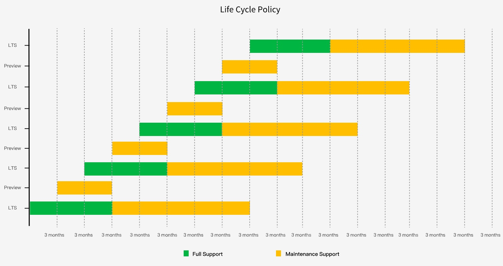

Alauda Container Platform Life Cycle Policy
Overview
Alauda provides a published product life cycle for Alauda Container Platform ("ACP"), in order for customers and partners to effectively plan, deploy, and support their infrastructure. Alauda publishes this life cycle in an effort to provide as much transparency as possible and may make exceptions from these policies as conflicts may arise.
Alauda Container Platform v3 provides a time-delineated, phased life cycle, where in at least 4 minor versions can be supported at any time. The time period of support is fixed from the point of minor version release and offers varying levels of support and maintenance. Alauda aims to forecast releases at a 3 month cadence, providing customers ample opportunity to plan.
All released errata will remain accessible to active subscribers across the entire life cycle.
Life Cycle Phases
Full Support
This phase begins at the GA/release of the minor version and ends after a 9 month period after the GA of the superseding minor release.
Full support is provided according to the published Scope of Coverage (AC支持(support) - Scope of Coverage) and Service Level Agreement (AC支持(support) - Terms of Service). Likewise, Development Support is provided according to the published Scope of Coverage and Service Level Agreement.
During the Full Support Phase:
- Qualified Security Advisories will be released as they become available.
- Urgent and Selected High Priority Bug Fix Advisories will be released as they become available.
- All other Bug fix may be released via periodic updates.
- All other Enhancement Advisories will not be released.
In order to receive security and bug fixes, customers are expected to upgrade their ACP environment to the most current supported micro (3.x.z) version.
Maintenance Support
This phase commences after the Full Support phase for the respective minor version and ends at 24 months after GA.
During the Maintenance Support phase:
- Qualified Security Advisories will be released as they become available.
- Urgent and Selected High Priority Bug Fix Advisories may be released as they become available.
- Other Bug Fix may be released at Alauda's discretion, but should not be expected.
- All other Enhancement Advisories will not be released.
At the end of the maintenance support phase, software and documentation will continue to be available to customers however no technical support will be provided except assistance to upgrade to a supported version. Full functionality of an ACP cluster(s) may require access to hosted services provided by Alauda, the availability of these services cannot be guaranteed for unmaintained and unsupported versions of ACP.
Life Cycle Dates

| Version | General availability | Full support ends | Maintenance support ends |
|---|---|---|---|
| v3.18.x | 2024-10-15 | 2025-07-31 | 2027-10-31 |
| v3.17.0 Preview | 2024-07-02 | X | 2024-12-31 |
| v3.16.x | 2024-04-25 | 2025-01-31 | 2026-04-30 |
| v3.15.x Preview | 2024-01-15 | X | 2024-07-31 |
| v3.14.x | 2023-10-27 | 2024-07-31 | 2025-10-31 |
| v3.13.x Preview | 2023-07-21 | X | 2024-01-31 |
| v3.12.x | 2023-04-27 | 2024-01-31 | 2025-04-30 |
| v3.11.x Preview | 2023-01-18 | X | 2023-07-31 |
| v3.10.x | 2022-10-31 | 2023-07-31 | 2024-10-31 |
| v3.9.x Preview | 2022-07-11 | X | 2023-01-31 |
| v3.8.x | 2022-04-30 | 2023-01-31 | 2024-04-30 |
| v3.7 Preview | 2021-12-31 | X | 2022-06-30 |
| v3.6.x | 2021-10-31 | 2022-07-31 | 2023-10-31 |
| v3.5.x Preview | 2021-06-30 | X | 2021-12-31 |
| v3.4.x | 2021-04-30 | 2022-01-31 | 2023-04-30 |
| v3.3.x Preview | 2020-12-31 | X | 2021-06-30 |
| v3.0.x | 2020-10-31 | 2021-07-31 | 2022-10-31 |